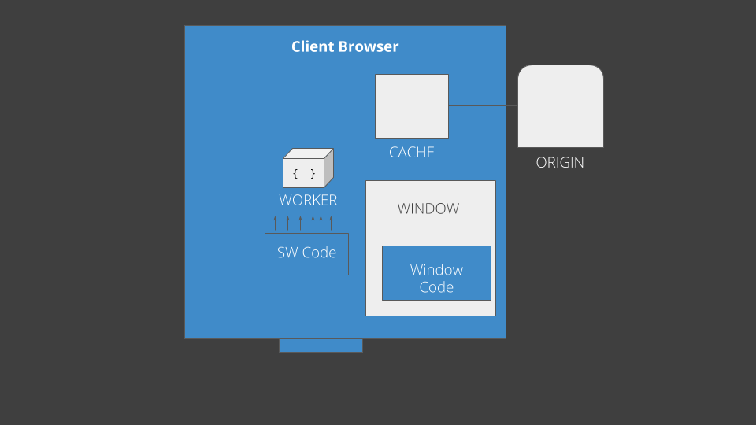
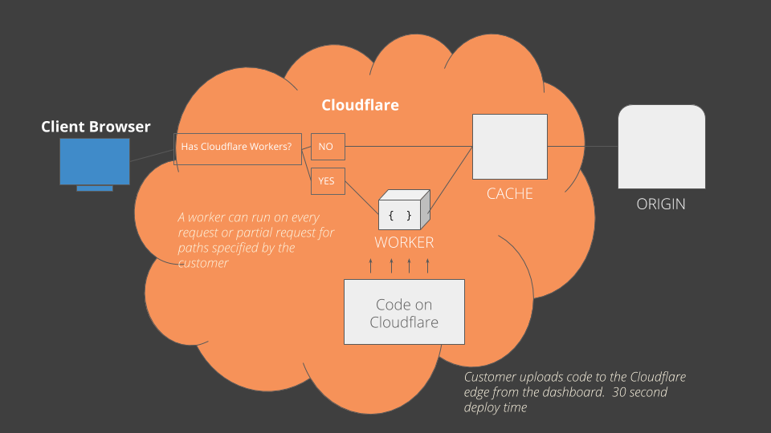

Putting Workers to Work
Victoria Bernard
May 17, 2018
Created by Victoria Bernard and contributors

Agenda
- What are workers?
- Examples of how to use
- Q and A
Assumptions
- Promises
- fetch
- Reverse Proxy
- Caching
What do workers do?
- Intercept network requests
Where do they run?
- Browser
- Proxy service
Browser Service Workers
Cloudflare Workers
In the window's JS one must register the service worker
navigator.serviceWorker.register('sw.js',
{ scope: '/path-to-control' })
One example eventListener
self.addEventListener('install', function (event) {
event.waitUntil(preSWWork())
})
Cloudflare Workers
Caching
Pre cache all the files that we specify by some CACHE_FILES
const CACHE_VERSION = 'name-of-my-cache';
const CACHE_FILES = [
'/whatever-i-want-to-precache.jpg',
'/static.html',
];
let preCacheFunc = function(){
return caches.open(CACHE_VERSION)
.then(function (cache) {
return cache.addAll(CACHE_FILES);
})
}
Populate the cache on installing the worker
self.addEventListener('install', function (event) {
event.waitUntil(preCacheFunc())
})
Caching
Set an event listener for any fetch on the scope of this service worker.
self.addEventListener('fetch', function (event) {
event.respondWith(grabFromCacheOrAdd(event.request))
});
Now, we will try to get the request from cache, if it's not there we will add ALL requests to that cache specified by CACHE_VERSION
regardless if it was in preCache files or not
async function grabFromCacheOrAdd(req) {
// Open the cache to see if we have a matching response
const cache = await caches.open(CACHE_VERSION)
const matching = await cache.match(req)
if (matching) return matching
// NO matching response, fetch and put into cache
const res = await fetch(req)
await cache.put(req.url, res)
return res
}
Offline
Offline

Demo
Offline
Warm cache with SAFETY_TMP
and ERROR_TMP
const SAFETY_TMP = 'src/safety.html'
const ERROR_TMP = 'src/error.html'
const CACHE_VERSION = 'name-of-my-cache';
let preCacheFunc = function(){
return caches.open(CACHE_VERSION)
.then(function (cache) {
return cache.addAll([SAFETY_TMP, ERROR_TMP])
})
}
Set an event listener for any fetch. If fails, return SAFETY_TMP
self.addEventListener('fetch', function (event) {
return event.respondWith(fetch(event.request)
.then(resp => {
if (!resp.ok) {
return grabFromCacheOrAdd(ERROR_TMP)
}
return resp
})
.catch(error => {
return grabFromCacheOrAdd(SAFETY_TMP)
})
)}
);
AB Testing
Intercept incoming requests
addEventListener('fetch', event => {
event.respondWith(ABTestResponse(event.request))
});
Set up a function to return the response for
/some-path but really fetch
/control/some-path or
/test/some-path, depending on the cookie. Set the a cookie if there isn't one
const name = 'experiment0'
async function ABTestResponse(request) {
let { isNew, group } = getGroup(request.headers.get('Cookie'))
let url = new URL(request.url) url.pathname
=`/$\{group\}$\{url.pathname\}`
const modifiedRequest = new Request(url, {
method:request.method,
headers: request.headers
})
const response = await fetch(modifiedRequest)
if (isNew) {
return getResponseWithSetCookie(group,response)
} else { return response }
}
AB Testing
Function to get group
function getGroup(cookie) {
isNew = false;
if (cookie && cookie.includes(`$\{name\}=control`)) {
group = 'control'
} else if (cookie && cookie.includes(`$\{name\}=test`)) {
group = 'test'
} else {
// 50/50 Split
group = Math.random() < 0.5 ? 'control' : 'test'
isNew = true
}
return { isNew, group }
}
Function to set cookie
function getResponseWithSetCookie(group, response) {
let newHeaders = new Headers(response.headers)
newHeaders.append('Set-Cookie', `$\{name\}=$\{group\}`)
return new Response(response.body, {
status: response.status,
statusText: response.statusText,
headers: newHeaders
})
}
CORs
Ever been really annoyed of developing with CORS errors ?
CORs
You want to run:
fetch('https://www.google.com')
fetch('https://some-other-host-aint-me.com')Instead I could call
fetch('https://mysite.com/external/www.google.com')
fetch('https://mysite.com/external/some-other-host-aint-me.com')Setup a path on your own domain to accept external requests
const myExtralsURI = '/external/'
addEventListener('fetch', event => {
event.respondWith(handleRequest(event.request))
})
async function handleRequest(request) {
const strippedURI = request.url.toString().split(myExtralsURI)
const externalURL = 'https://' + strippedURI[1]
const res = await fetch(externalURL)
// Modify response headers to fix CORS
const headers = new Headers(res.headers)
headers.append('Access-Control-Allow-Origin', '*')
return new Response(res.body, {
status: res.status,
statusText: res.statusText,
headers,
})
}So much more..
- Performance
- Push Notifications
- Progressive Web Apps